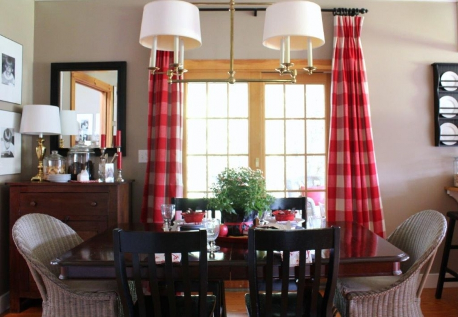
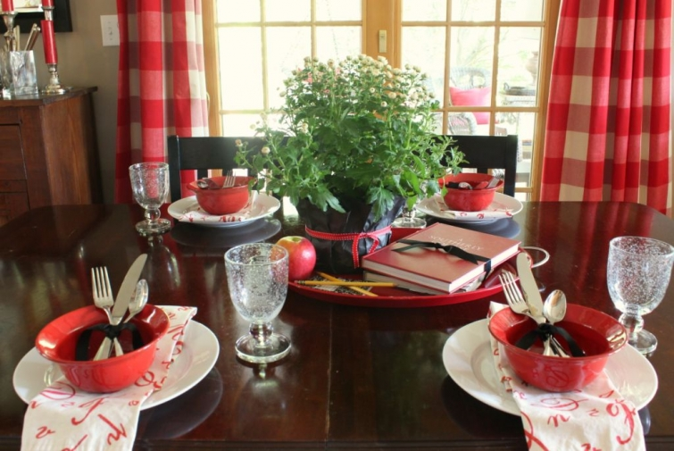

.png)
.PNG)
.PNG)
.PNG)
.PNG)
.PNG)
.JPG)
.JPG)
.PNG)
.PNG)


It’s those lines from You’ve Got Mail that are making me do this. You know…the ones about loving New York in the fall, buying school supplies, and sending you a bouquet of newly sharpened pencils.
Those lines.
I think they are permanently ingrained in my head and sending me subliminal messages..like…
Buy school supplies.
Decorate with those school supplies.
And they are telling me…
Use those napkins with the penmanship letters on them at your table.
Use books and marbled composition notebooks and pencils and apples-for-the-teacher for a centerpiece.
 And the decorate-with-school-supplies message has made me put out kid friendly after-school snacks.
And the decorate-with-school-supplies message has made me put out kid friendly after-school snacks.
The only problem is I am the only one left at home that now eats them. 🙁
(My husband has great restraint.)
When you love a movie like I love that movie, it kind of gets in your head and your heart.
Like when I am opening car doors in the morning at my job, and I am helping those little people out of their car seats, I say, Good morning Hank! Good morning Riley and Avery. How are you today?
And I feel like Meg Ryan as Kathleen Kelly when she is opening her shop door at The Shop Around the Corner, greeting the children there with, Jessica and Mya, How are you today? 🙂 (Do you remember that scene?)
And it makes me wish again that I had a little bookstore that I could be opening the door to in the morning.
(Didn’t we all wish that when we saw that movie for the first time?)
And we would decorate our cabinets in our little shop-around-the-corner with children’s books and toys and cute posters just like the ones in the movie…and maybe put in a coffee bar for the grown ups who bring their children to our shop. 🙂 (But of course, there is a Starbucks nearby on another corner.)
And we might even include a chalkboard or two in our charming bookstore, right?
And perhaps the giant bookstore would not put our little shop out of business.
You’ve Got Mail also made me fall in love with New York City. September is a good time to think about that…remembering those who lost so very much in the tragic events of 9-11 and honoring the incredible strength of those who have kept the city going. It makes me think of that.
As you can see, the bouquets of newly sharpened pencils, and all the other school supplies have made themselves at home in our house this month. (If you missed part 1, there are more school supplies running rampant there as well.)
And that’s what happens when you fall in love with a movie. 🙂
Until next time…


.PNG)
I just came across your blog on Pinterest. I absolutely love your style of decorating. I felt compelled to write because, like so many other readers, You’ve Got Mail is my favorite movie of all time! So many memorable lines.
——————————————————————-
I am so glad you found the blog Beth! Welcome! And I am happy you liked the September decorating. You’ve Got Mail is such a fun movie, and I think there are quite a few of us that love it…from the houses to the lines to the plot. Please visit again!
Kelly
One of my very favorites. My kids and I still say, ” the Godfather is answer to any question”. Terrible we know the lines to that!
For some reason I am not getting your emails. Came by this morning just because I was browsing my favorite places for eye candy. And as always, you never fail to make me smile. I have to ask where you purchased those delightful red bows and those beautiful heavy water goblets.
Hope you are enjoying your weekend. Thank you for the inspiration!
———————————————————————-
Knowing the lines is not terrible. If it was, I think a lot of us would be in the same boat with you! The red bowls came from Pier 1 years ago, and the water goblets are the Tag bubble glass goblets from Amazon. I don’t know how to help on the delivery of the email of the blog. Feedburner is being a pain! Try signing up with Bloglovin. It’s free and it seems to do a better job.
Thank you for your sweet comments!
Kelly
[…] Kelly at Talk of the House shows how she decorates for fall while it’s still too hot for pumpkins on the porch in two parts. […]
Kelly,
You are spot on once again. I was out sick from school last Friday (with bronchitis) and the movie I picked to watch while in bed was You’ve Mail! I always have to re-watch it every Fall. I just love everything about the movie and how you have carried it through your decorating! The movie touches my heart as well (since I am a 5-8th grade Reading teacher)! Thanks for sharing! Your play room is still my favorite (as green touches my heart).
———————————————————————-
I am so sorry you were sick Dawn. Goodness, it seems early in the year for bronchitis. Hope you are well by now. At least you had a good movie to watch while you were recovering!
Kelly
You make your home fun–fun to look at and, I imagine, fun to live in–and you do it in a sophisticated but casual style. Nice.
Agreed with all the rest “You’ve got mail” is one that really seems to make a place for itself in our hearts. I’m a bit sentimental though I rarely admit it publicly, but I also thoroughly enjoy those romantic comedies of the ’30s and 40’s with Katherine Hepburn and Spencer Tracy. If I were your neighbor I’d help you with the cookies and we watch some videos of that bygone era together.
Thanks, Kelly
———————————————————————-
Gosh thank you so much for the kind compliments! I am with you on liking Katherine Hepburn and the old movies. You could definitely help us eat the cookies and watch movies!
Kelly
My dream of having a children’s book store has been living in my heart for many years. I certainly have enough children’s books to start one 🙂 I have a huge collection from my years of teaching. I have been retired 4 years and still really miss sharing my books and reading to those wonderful little personalities~
——————————————————————–
We could open a store together Susan! It would be a lot of work but fun. My favorite would be read alouds of Christmas books…guess we will have to keep on dreaming. 🙂
Kelly
I thought i was the only one who loved that movie ” as long as we both shall live”. I am so bad to watch it every time it is on – which is often! Love your home and movie themed decor which totally makes sense. I will have to think about Kathleen Kelly and what i might do to add some fall romance to my home. Thanks!
——————————————————————–
Oh that line just kills me! And I can see Tom Hanks saying it right now in my mind. Sooo sweet!
Kelly
Kelly,
Your post makes me want to watch that movie again. I loved her apartment too. The bookstore was wonderful and it makes me sad that so few bookstores exist anymore, at least here in Southern California. You do the best job staging each corner of your charming home…I’m with one of your other readers, if I lived closer I’d stop by and help you with the snacks!
Have a wonderful weekend…it’s supposed to be 90+ degrees here. Ouch. I’m being patient but I can’t wait for some cooler weather. 🙂
xo,
Karen
————————————————————————–
I loved every set in that movie – even the children’s book dept. in Fox Books. Thank you for the compliment on the decorating. I wish you could come on over and share in the snacks. (There is caramel gelato in the freezer and homemade gingerbread in a pan on the counter too!)
Hope we both have cooler weather soon.
Kelly
I have to admit that I did not see that movie. Jaw dropping, I know! Now, I want to! As always your house looks lovely. Such a clever idea to use school supplies as decorations. All my kids are out of the house and I,too,am the one eating all the snacks. Somebody has to do it, right? Can’t let all that goes food go to waste. Lol You have gotten me hooked on chalkboards. I bought a large frame and am going to paint the glass with chalkboard paint. I now have 3 large and 1 small chalkboard. And I have another idea for one as well. I’ll be sharing it soon! Can’t wait to get back to blogging. I have so much to share!!!
———————————————————————
Jayne, your homework assignment is to watch that movie! Girl! Sounds like you are doing great with the chalkboards. 🙂
Kelly
I am in LOVE with that penmanship chalkboard!!! I think you could seriously develop a line for Pottery Barn or the like–I am not kidding! That peanut butter cookie chalkboard is to die for, too! That last photo with the chair and lunchbox just epitomizes back to school to me. 🙂 Thanks for sharing all your great ideas and your many talents.
———————————————————————-
Mimi, you are too sweet! I am so glad you like all the chalkboards. The peanut butter cookie came about because I have been craving PB cookies lately!
Kelly
I love it all…so very sweet! love the red and white buffalo checks! I would not decorate that way myself now! The children’s things are a long ways away from me….my oldest is 43…going to have my first great grandchild in November…so I it doesn’t fit! but I love what you have done! I had to think for a sec about that movie…ha…getting it confused with Sleepless In Seattle…ha!
I love all the attention to detail! I have simplified since we downsized a lot…don’t have the energy for upkeep anymore! it is funny how as we age our priorities shift!
Anyway your home is lovely!!!!!!!!!!
——————————————————————–
Congratulations on your first great grandchild Katherine! How fun. We won’t be seeing grandkids here anytime soon, but I did just attend a baby shower for our niece so there will be a little one here in November as well. I am with you on downsizing…although everyone keeps telling us we need to keeep a larger home for when the kids visit with their own families.
Thank you for your lovely comments here.
Kelly
I LOVE that movie! I watch it everytime I see it’s on TV, plus I have the DVD….Love it! What a great post!
———————————————————————
Thank you Lisa! I think that movie is loved so much that it may have a “cult following.” LOL
Kelly
As always, I enjoy your posts very much! I get so many good ideas from your decorating style, choices of color and the way you bring your items together to make your rooms feel so cozy! I also like “You’ve Got Mail.” We made our first trip to New York this summer and enjoyed it. Because of time, we basically just “hit the highlights”, but on our next trip, we hope to include a visit to the neighborhood where the movie was filmed. I love the feel of the neighborhood and how the quaint shops are nearby. One thing I also liked about New York was being able to walk so much. As lovely as it is in Georgia, I can’t walk to my store! I wouldn’t trade the peace and quiet I enjoy here for the hustle and bustle of the city, but New York certainly has many nice qualities! Hope you have a wonderful weekend!!
—————————————————————–
I am glad to share ideas here and am happy that you can use them Renee. You are so right about walking in NYC…and I would much rather walk there than try to drive in that traffic! I hope you get to visit there again and see some of the places in the movie.
Kelly
As always, I loved your post. I too would love a book store. I would need a clock in there only to remind me it’s time to go home….instead of WHEN do we get to go home!! I love the penmanship boards. I would LOVE if you could recreate them and put the download for sale! One more thing…I totally understand the treats in a jar, and no one is there to eat them. 🙁 I remember the days when I was lucky if the jar was full for more than a day. Aaah. Have a great weekend. Lori Lucas
——————————————————————
So true about loving a book store! I will have to think on your download idea…not sure I know how to do that, but I WILL think about it.
Kelly
Best movie ever!
———————————————————————
Amen!
Kelly
Enchanting.
——————————————————————–
Now aren’t you the clever one!
Kelly
Everything looks so sweet Kelly. Oh how I wish they still taught penmanship in schools! Your chalkboard is perfection. And in all the time I’ve been reading your blog I never noticed the bookplate label holders (is that what they’re called?) on the dresser in the playroom. That’s a nice little detail. I had to look back at another playroom post to see if they were new. Ha!
Fall is headed to Ohio this weekend. I’m looking forward to a cooler day for my daughter’s cross country meet on Saturday. So far we’ve just had hot and muggy. Hopefully I’ll get to break out my school sweatshirt. 😀
—————————————————————–
We do still teach cursive the last few months of third grade here, but it really needs much longer than that for practice. I wish parents would practice it with their children in the summer following third grade, and that would help tremendously. The bookplate labels have been there, so I guess they are just new to you. 🙂 I had a hard time finding them to purchase them…seems like we had to get them from a furniture maker’s catalog. Glad to know that fall is making its way to your area.
Kelly
Such a favorite movie of mine too Kelly!!! It is one of my “comfort movies”….you know ….when you just want to cuddle up on the couch with a soft blanket and hot chocolate!! Everytime I see your home in all its beautiful decor…I want to run out and redecorate. I love the school time lovelies in your home!!! I recently found out that Gilmore Girls…..a big” comfort” show for me…..is coming out on Netflix in October and I can envision lots of couch and hot chocolate time. Guess I better get my fall decorating done before Oct. or it won’t get done…..LOL.
———————————————————————
It is definitely a comfort movie! I have known about Gilmore Girls for a long time, but I have not seen any of it. I need to get the dvd’s to watch it when I get a break this fall.
Kelly
Your September decorating looks so cute, I love your attention to detail. Your penmanship blackboard reminds me of the borders around the black chalkboards we had in grade school – now it seems as if all school chalkboards are green. Your penmanship is perfect! It’s finally cooled off here in St. Louis and I hope to begin bringing out my fall decorations this weekend. I love that they can stay up through Thanksgiving. And yes, I wanted to own a bookshop as well, exactly like the one in You’ve Got Mail.
———————————————————————-
Thank you Jackie! Our school does not even have chalkboards anymore. They were all converted into whiteboards, and now electronic Smart Boards hang in front of them! I wonder what the next wave will be. Hopefully I will be retired before it comes around.
Kelly
Oops ~ forgot to tell you that I made your apple brickle dip {because of course September is all about eating apples in every form} and we all loved it. It is now making the rounds between my girls and their fall events.
Thanks!
——————————————————————–
That stuff is addicting! I need to make some myself. Thanks for the reminder!
Kelly
I could have written every word in this post. I LOVE that movie and I am staring at a bouquet of freshly sharpened pencils as I write this! I buy school supplies every year and have stacks and stacks of crayons and notebooks. {my children graduated from HS over 15 years ago} I tell myself that I am donating them and I do, but I still have more than my grandchildren will ever use:-)
I decorate with children’s books too, and our little playhouse, named Storybook Cottage, is full of children’s book characters and books. Madeline, Pepito, Max, Ruby, Lily, etc.
I could move right on in to your house Kelly, red and green are my very favorite colors.
Thanks so much for sharing.
——————————————————————-
That is too funny about you and the school supplies Sue! I am glad you liked all the decorating here. Red and green are so cheerful!
Kelly
Oh Kelly, that is one of my FAVORITE movies too!! That little store just captured my heart. I own the dvd and I admit to watching it when the mood hits me. I have always been fascinated by NYC and I would love to take a trip there. It is on my bucket list. I saw it across the river from New Jersey when my son was married up there but did not make it to the city. l love your penmanship chalk boards. So cute…good penmanship is becoming a lost art. Hoping things are settling down at your house and you are enjoying your empty nest.
———————————————————————
We should all get together to watch the movie and have a big party! I hope you get to visit New York. There is so much to see there…and so much shopping and eating and theater. Thank you for the compliments on the chalkboards! Things ARE settling down some…but we do have a wedding in the family coming up soon though.
Kelly
Your dreams are the book store, while mine are a small quaint coffee shop. I’ll ride my bike or walk to work too. I would so enjoy the customers. 🙂 Love that movie. Now Kelly, with all the kids gone, which one of you is going to eat all those goodies in those glass jars of yours? If I lived near by I would be stopping in to help eat quite a few of those cookies, or have tea and one of the muffins in the kitchen. 🙂 Love all your red, especially your plaid curtains. Your yellow lunch box is adorable. I have a black one that I have had since I was 12. YIKES. Again, no fall décor here yet. It was a wonderful cool day today that brought a camisole with a red plaid flannel shirt, long jeans and my red suede ballet shoes from Target (last year clearance). I love red too. Hubs definitely had a smile on his face when he walked in the door tonight to came home to the smell of pot roast cooking. It definitely felt like the start of Fall here. May it commence….
———————————————————————
A coffee shop is a wonderful dream as well, Debra. 🙂 I am afraid I am the eater of all things snack-y. My husband just does not help much when it comes to them. Now if it were vegetables, he would be right on it! (No fun, right?) Jealous of your fall apparel (and your pot roast ready!)
Kelly